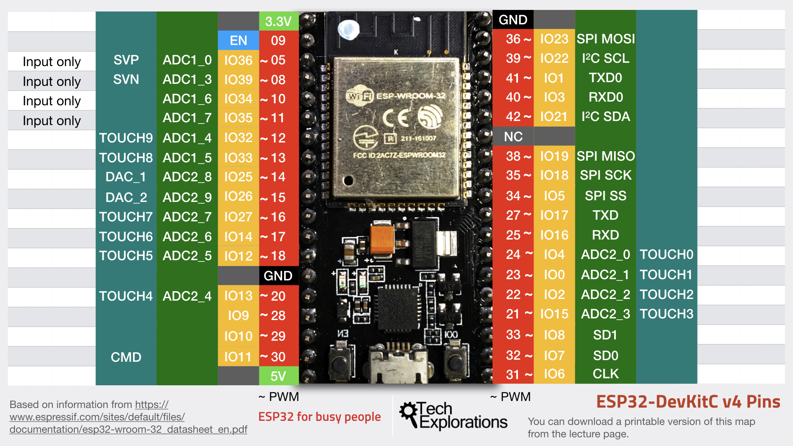

ESP32:n tekniikka
Suoritin ja muisti
ESP32-tuoteperheeseen kuuluu useita eri mikrokontrollereita, joten niiden suorittimet, muistin määrä ja muut tekniset ominaisuudet vaihtelevat mallin mukaan.
Eri ESP32-malleissa käytetään esimerkiksi yhden tai kahden ytimen suorittimia. Myös käytettävissä olevan muistin määrä riippuu käytetystä ESP32-mallista ja moduulista.
ESP32-mallit
ESP32
Alkuperäinen ESP32 on yksi ESP32-tuoteperheen tunnetuimmista malleista. Se tukee Wi-Fi- ja Bluetooth-yhteyksiä ja soveltuu monenlaisiin IoT-projekteihin.
ESP32-S2
ESP32-S2 on yhden ytimen mikrokontrolleri, joka on suunniteltu esimerkiksi IoT-laitteisiin ja vähävirtaisiin sovelluksiin.
ESP32-S3
ESP32-S3 on kaksiytiminen ESP32-malli, jota voidaan käyttää esimerkiksi IoT-, sulautetuissa ja koneoppimista hyödyntävissä sovelluksissa.
ESP32-mallien vertailu
| Malli | Ytimet | Wi-Fi | Bluetooth |
|---|---|---|---|
| ESP32 | 2 | Kyllä | Kyllä |
| ESP32-S2 | 1 | Kyllä | Ei |
| ESP32-S3 | 2 | Kyllä | Kyllä |
Langattomat yhteydet
Wi-Fi
Wi-Fi-yhteyden ansiosta ESP32 voidaan yhdistää langattomaan verkkoon ja internetiin. Tätä voidaan hyödyntää esimerkiksi älykoti- ja sääasemaprojekteissa.
Bluetooth
Bluetooth mahdollistaa tiedonsiirron ESP32:n ja muiden Bluetooth-laitteiden välillä. Käyttökohteita ovat esimerkiksi puhelimella tapahtuva laitteen ohjaaminen.
GPIO-liitännät

GPIO-liitäntöjen avulla ESP32 voi lukea tietoa antureilta ja ohjata erilaisia elektronisia komponentteja.
Yleisin käyttötapa
- Kytke anturi ESP32:n GPIO-liitäntään.
- Ohjelmoi ESP32 lukemaan anturin tietoja.
- Käsittele saadut tiedot ohjelmassa.
- Ohjaa niiden perusteella esimerkiksi LED-valoa tai muuta laitetta.
Termistöä
- GPIO
- General Purpose Input/Output eli yleiskäyttöinen tulo- ja lähtöliitäntä.
- IoT
- Internet of Things eli esineiden internet.
- SoC
- System on Chip eli järjestelmäpiiri, johon on yhdistetty useita toimintoja samalle piirille.
- Wi-Fi
- Langaton verkkotekniikka, jonka avulla ESP32 voidaan yhdistää verkkoon.